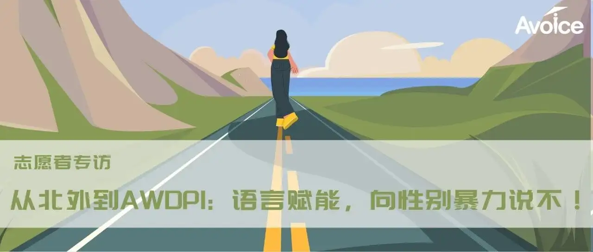
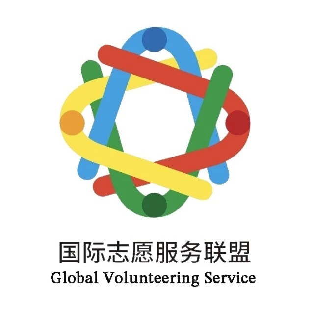
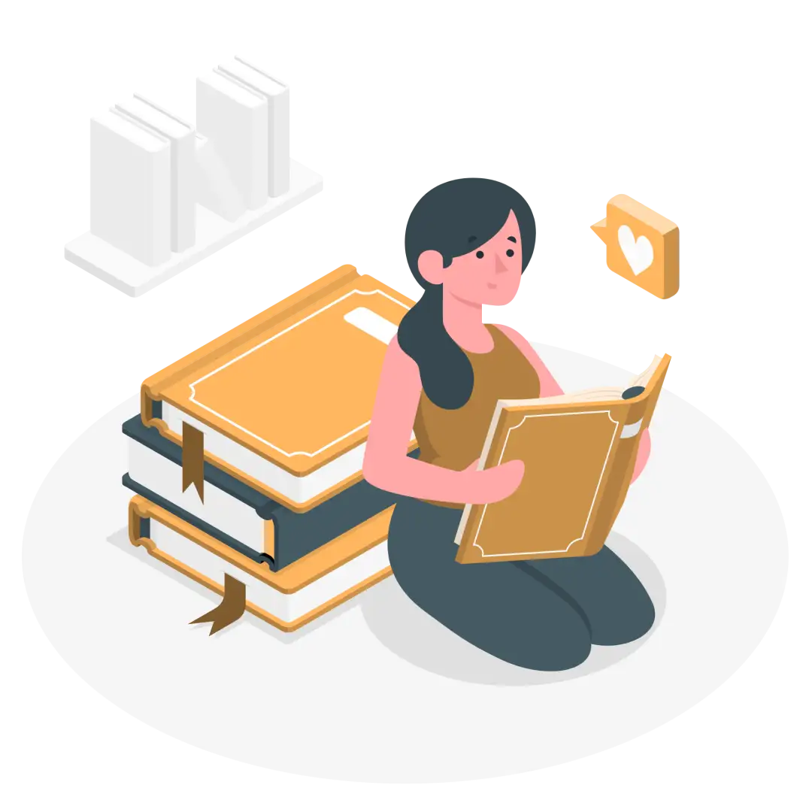
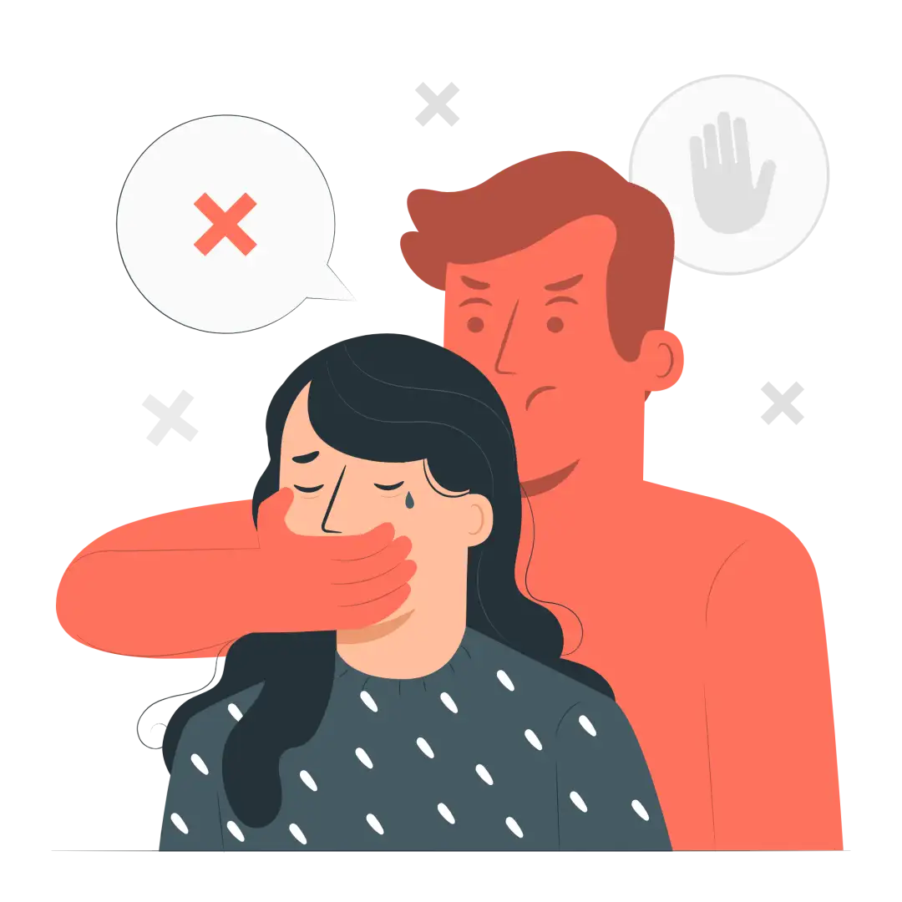
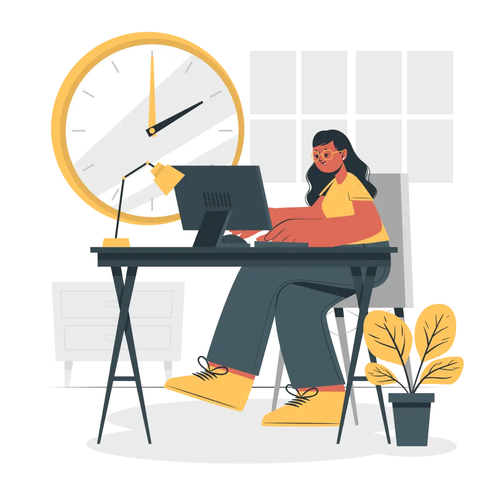
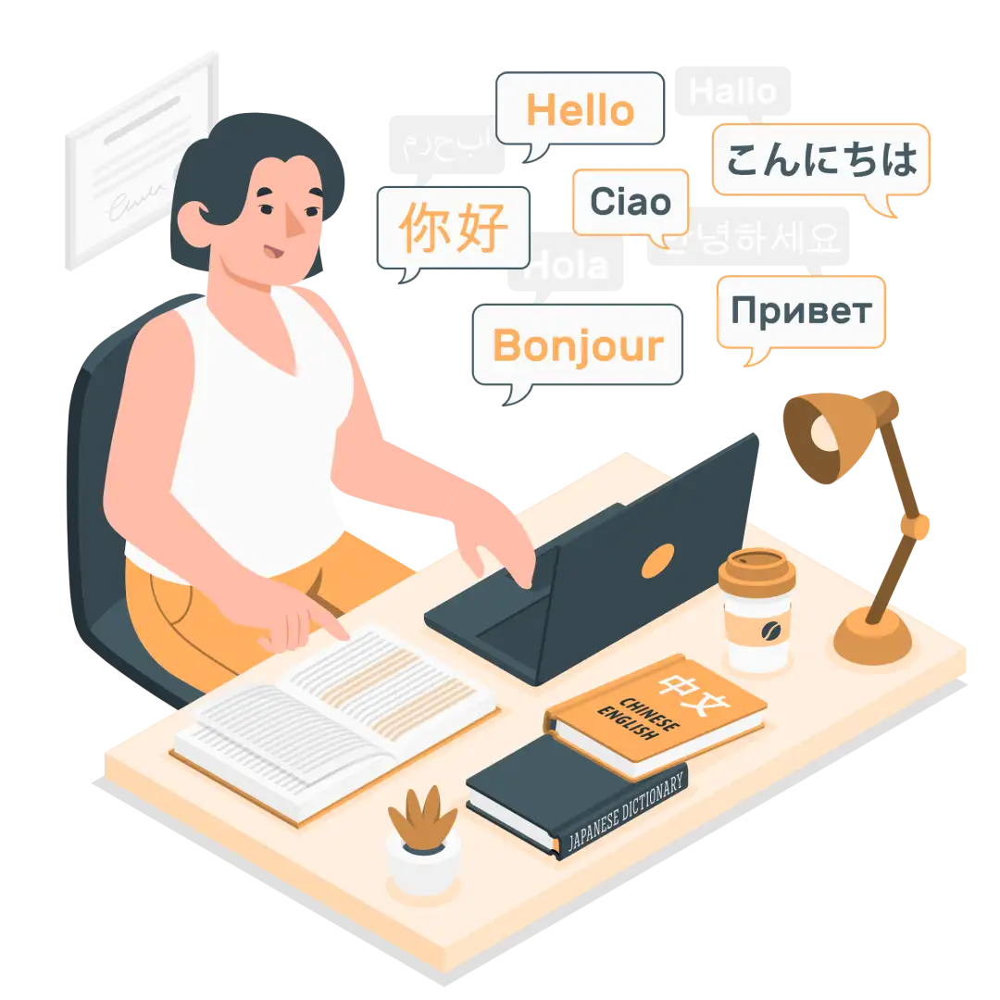
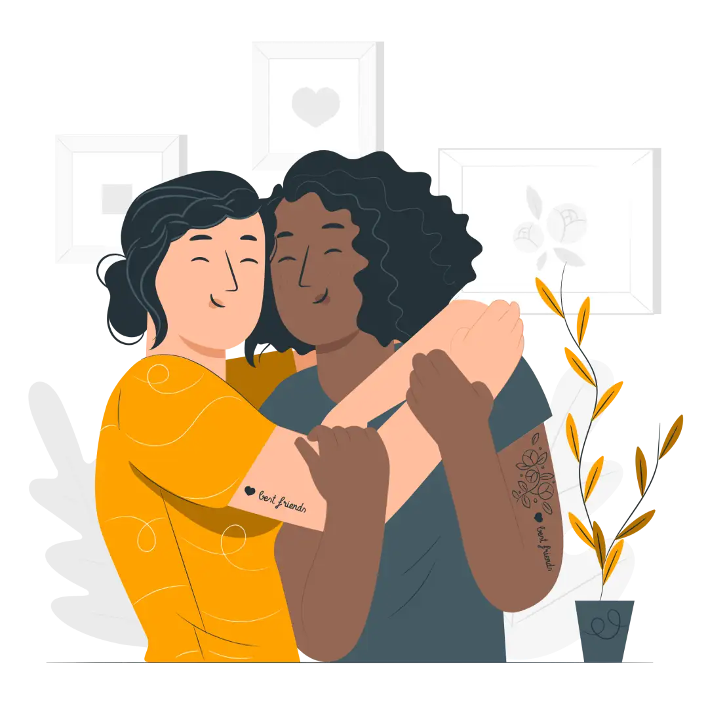
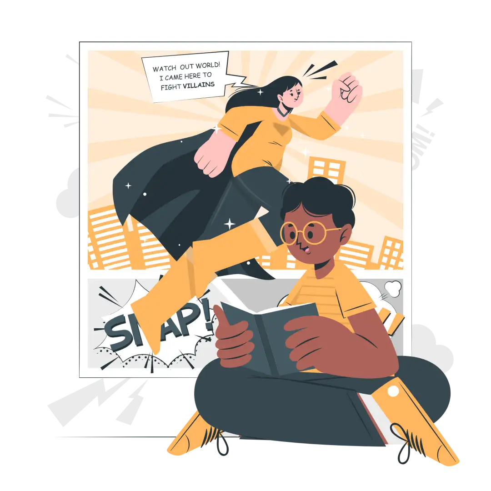
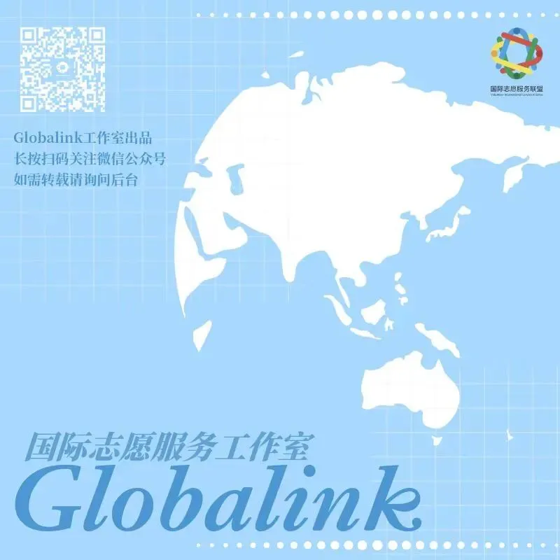

以下文章来源于G V S ，作者Globalink 工作室

国际志愿服务联盟（Global Volunteering Service）是由北京外国语大学发起成立的志愿服务组织，致力于孵化全球志愿项目、培育青年全球领导力。Globalink工作室作为联盟运营团队，正全力推动这一使命的实现。
GVS × AWDPI
一门新语言是一个新故事的起点。
英国心理语言学家弗兰克·史密斯在其著作《去思考》（To Think）中写道，“一种语言让你进入一生的走廊，两种语言打开沿途的每一扇门。”语言是传达“姐妹情谊”的沟通系统，是女性对抗社会不公的有力武器，是帮助女性走出国门，寻觅未知的必备工具。

语言还是沟通不同民族、国家、地区的桥梁。北外学子用自己独特的方式在这个开放和保守不断拉扯，机遇与挑战错综复杂的时代架起了中国和国际社会的桥梁。
作为致力于保护和赋能海外亚裔女性的国际公益组织，AWDPI吸纳了海外百余名志愿者，其中不乏北外学子的身影：
俄语专业毕业生陈星如作为AWDPI的早期核心负责人之一，带领团队建立搭建起一套中俄双语的面向俄罗斯亚裔女性的救助资源数据库。
国际经贸专业的毕业生吴天天现任美国办公室负责人，正带领团队不断完善援助流程 以便更快速地触达暴力幸存者。
法语专业毕业生陈雯静通过翻译反家暴相关法案，为法语国家受到家庭暴力和性暴力侵害的华人女性提供援助。
朝鲜语专业本科生欧渌好在语言学习中了解到韩国女性所面对的社会困境，坚信要通过不断普及教育来培养女性的独立意识。
英语专业毕业生杨依云则正在负责反家暴教材大纲的撰写，希望通过提供免费教材来帮助资源有限的女性学会如何保护自己。
在加入AWDPI后，这五位北外学子用四种不同的语言开启了打破性别偏见，援助遭家暴与性暴力幸存女性的五个不同故事。
“双向的收获与感动，正是公益的意义所在”
「陈星如，北外学士，斯坦福大学硕士，现从事金融行业相关工作」
我是2021年参与到AWDPI这一项目中，是该项目早期的核心负责人之一，主要负责俄罗斯地区的相关工作。
初期阶段，我负责综合管理处的工作，后期则专注于俄罗斯地区，主要包括：联系俄罗斯当地的救助组织、华人组织，建立合作关系，以及与翻译组、学术组合作，处理相关材料等。我在每个地区的核心任务类似，而且基本上都是从零开始做这个事情。
在AWDPI的工作中，我们面临的最大挑战是与当地机构建立合作。 许多俄罗斯当地组织和华人团体刚开始都对我们表现出了合作抵触。他们要么认为合作缺乏实际利益，要么对家暴议题的敏感性有所顾虑。尤其令人困惑的是，一些原本积极帮助弱势群体的组织，却对女性保护项目持怀疑态度，甚至不做调研就断言当地根本不存在家暴问题。

在实际工作中，我们虽然未能建立完整的救助闭环， 但成功构建了系统的救助数据库，涵盖了庇护所、法律、心理援助等支持资源。这一过程远比想象中的曲折，尽管困难重重，我们还是取得了一些实质性的成果。我们开发了一套中俄双语检索系统，方便不同背景的求助者使用。最终完成的也不仅是一个实用的俄罗斯救助资源数据库，同时还包括一份详实的俄罗斯反家暴现状调研报告。这些成果来之不易，为组织后续的工作打下了坚实的基础。
北外的学习经历为我们参与海外女性保护项目提供了重要支持，扎实的语言专业能力是开展跨国工作的基础工具。国际视野使我们能够敏锐地关注到海外弱势群体的需求，而跨学科的课程设置，亦为处理复杂的跨国援助案例提供了有效支撑。记得当时我们几个北外俄语专业的同学，为了准确翻译专业术语，常常要反复推敲到深夜。我们要从海量信息中筛选出有用的内容，再整理成清晰易懂的框架。有时候确认一个庇护所的联系方式，甚至可能要打十几个电话。
经我们调研发现，俄罗斯当地现有的反家暴法规体系存在严重不足，疫情期间的家暴案例数量显著增加。然而值得注意的是，自90年代以来，当地民间社会已自发形成了较为成熟的救助组织和庇护所网络。我们曾与11家具有代表性的专业救助机构开展过深入的交流与合作。
特别值得关注的是，当地华人女性群体的处境依旧不是非常乐观，许多女性处于弱势或受害状态。并且当地针对华人女性的救助资源相当匮乏，一些当事人的维权意识相当薄弱，有效的社会支持网络少之又少。我觉得要想改善环境，一方面需要完善救助机构体系，另一方面也需要培养女性的反家暴意识。我们要加强和当地更多机构的合作，构建协作网络。
这个项目见证了我多方面的成长。最重要的是，它加深了我对公益本质的理解。我意识到，公益不是单方面的付出。在帮助他人的过程中，来自受助者的正向反馈可以让我真切体会到自我价值的实现。这种双向的收获与感动，正是其意义所在。
“爱、无暴力和温暖”
「吴天天，北外国际经济与贸易学士，纽约大学公共政策硕士，现从事金融行业」
我是2020年加入AWDPI的。我进来的时候，组织成立不久，我算是第一批加入的志愿者。目前，我是美国办公室的负责人。
我刚加入时，美国办公室还没有成立。我当时跟合作拓展处的负责人，还有其它部门的小伙伴做了一些项目。后来从北外毕业后，我到美国读研究生，成为了美国办公室的负责人。
每个国家有自己的国情，美国的反家暴机构，法律体系、社会文化、政治政策等和中国都不一样。所以我们美国办公室的运作是独立的，架构和国内基本类似，只不过我们需要遵循美国的法律，来保护和援助受到性侵害和家暴的华人女性。
我们所经手的案例当事人一般是在50岁以下的海外华人女性。这些人中，很多都是刚在美国结婚不久的女性，要不就是处在亲密关系中的大学生。工作中，我意识到女性对援助的需求是非常大的。作为一个华人女性，学会慢慢适应国外环境就已经很消耗了，更别说熟悉当地法律了，很多人对自己国家的法律都不清楚。在这种情况下遇到暴力行为，受暴女性往往手足无措。
几年下来，我变得外向了很多。因为我需要不断地和不同的人、组织链接，并向其它组织介绍我们的组织，询问他们是否有合作意向，不断扩大我们的影响力。同时，因为我在组织里待得比较久，所以和很多成员保持了良好的关系， 交到了一些志同道合的朋友。我们有时候会组织团建，小伙伴们在一起很开心。

目前，美国办公室还属于发展初期，我们正在努力地把它建设成为一个更为成熟的团队。我觉得我做的事情非常有意义。它既能够帮助受暴力侵害的女性，又能够传播反家暴相关的知识，破除大众的偏见。
未来，我希望AWDPI能够更加专业，发展建立出一个全职的团队。另外，希望我们能够吸引到更多的合作方和捐赠方，这样就能够有较为持续、稳定的资金维持我们的运营。我还希望以后有更多在美国的华人亚裔女性了解到我们组织。如果她们受到暴力伤害，就能及时触达我们的组织，我们也能迅速给她们提供支持。
我想我可以用三个词概括我在AWDPI的工作感受，那就是： 爱、无暴力和温暖。
“无穷的远方，无数的人们，都与我有关”
「陈雯静，北外法语专业学士，现伦敦政治经济学院国际发展管理研究生」
因为最初的记者梦，我选择了法语专业，多年的学习让我开始关注华人女性的不公处境。留学背景亦让我意识到，一旦女性在国外陷入此番困境，有时候连求助的自信心都会受到影响。为了能够帮助到她们，我选择加入了AWDPI。
我经手过的主要是有两件事，一件事就是把一些法语国家的家暴法律，以及一些家暴案例翻译成中文，另外就是审核组内小伙伴写的材料。
相对于日常用语，法律语言要更加细致、严谨。我们的翻译工作不需要用华丽的词藻堆砌，而是要用最直白精炼的语言，去传达出文本的意思。
一些专业的内容对我来说挑战很大，为了提高翻译的准确性，我会查阅十分多的资料。我们也整理了一个专门的组内文档，大家会各自把在翻译中遇到的一些专有名词、较难的语序、文件资料等一起放进去。 在翻译遇到瓶颈时，我们就可以查看这个共享文档。
通过翻译，我了解到了一些其它国家的家暴案列，以及反家暴法的相关情况，还接触了很多真实的案例。这样的经历影响了我的职业方向，也启发了我对国内外家暴案件的思考。我发现，在反家暴这件事情上，国外的材料方法更多，探寻空间也要比国内大，我也觉得清晰的定义对反家暴工作的开展至关重要。

虽然我们都做着看起来很小的工作，但我们必须要去做。因为根本上，我们关注的还是人本身。当当事人不再被外部的身份归属问题所裹挟，她个人的感受、需求，以及解决办法才会回归到考虑的首要位置。
如果用一句话来总结我的收获，那就是“无穷的远方，无数的人们，都与我有关。”于我而言，“创造更好的未来”这样的说辞太过理想，我觉得在生活中做一些力所能及的事情就足够了。
“每个女生都要强大起来，然后保护彼此”
「欧渌好，北外朝鲜语专业本科生」
我今年春天加入AWDPI。我一直对女权主义、女性保护比较感兴趣。在上小学的时候，我就接触到了Emma Watson在联合国的主题演讲“He for She”，以及一些国外知名人士的平权言论。“我们每个女生都要强大起来，团结起来然后保护彼此。”这样的观念在我的心里扎下了根，一直深深地影响着我。

在北外，女生比较多，环境很开放。我在这种环境中感受到女孩子之间相互关爱的氛围，同时我们也有更多的良性竞争。学习之余，我了解到了很多韩国的性别平权运动，所以对这一方面兴趣更加浓厚。我加入到AWDPI这个组织，一方面是想锻炼自己的能力；另一方面我也希望通过自己的力量，为女性保护项目和社会做出一些贡献。
我目前是宣传处的公众号编辑，参与了多次公众号的排版，这份工作锻炼了我在新媒体方面的设计、编辑和运营能力。我们的工作环境非常温和，大家能够畅所欲言，整个氛围很友好。
AWDPI很重视对志愿者专业知识的培养，经常举办活动。我之前就参加过几次线上讲座。如果有谁遇到困难在大群里问，也总有人及时出来回复。团队小伙伴都在互相帮助彼此解决问题。我感觉大家靠内驱力工作，没有什么权力关系。此外，组织里的成员不仅有女性，还有男性，我觉得这非常有利于我们的发展和性别平等的推进。
对我来说，平权的两个侧重点在于，一方面是保证女性的人身安全；另一方面是保证女性平等受教育的权利。通过接受公共教育，女性才更有可能形成独立意识。即便女性生在一个观念较为“封建”的家庭，具有独立意识的女性也不会认为自己低人一等。另外，我认为如果想实现男女平等，就要靠更多女性的发声。只有女性接受过教育，才能更懂得如何为自己和群体争取权利。
“长路漫漫，我们任重道远”
「杨依云，北外英语专业学士，北大燕京学堂中国学硕士，现为ICF生命教练」
我是今年春招加入的 AWDPI。在加入之前，我一直在做亲密关系暴力相关的研究，也一直很关注相关的实务，所以这是我加入的初衷。之前我就有听过这个组织，今年完成毕业论文后，我就选择来支持我们的团队。
在反家暴领域，虽然很多知识已经被创造出来，但是我认为，怎么将理论转化为公共认知从而推动政策改变更为重要。 所以我一直想做一些工作，去搭建学术跟公众之间的一个桥梁。
我自己从本科的时候就对性别议题很感兴趣，北外是一个女权运动氛围浓厚、校风开放进步的地方。我在学习英语专业的同时，也学习性别社会学，并逐渐跟性别这个学科建立了深厚的关系。
2019年北大包丽案，让我非常震惊，并且感到十分痛心。我觉得这个事情极大地触动了我，让我开始关注亲密关系中的非肢体暴力和权力关系。后来我的毕业论文也选择了这个话题，随着研究的深入，我就越能感受到这个题目对我、对当下社会的重要性。

如果要问我什么时候开始关注性别和女性的话，也许非常早。我小时候经常会质疑：凭什么有些事女孩子不能做，而男孩子就可以。 我天生就是一个有点反叛的人，不是一个乖巧懂事、温顺的女生，这让我受到了很多来周遭的评判，比如我身边一些人觉得我野和强势。这些批判使我产生了很多困惑，而这些困惑推动我去寻找原因。我想要去理解自己，也因此开始了对性别相关议题的学习。
性别是一个非常需要知行合一的学科领域。你不仅要学习这些知识，更要在你的生活实践里时常反思，时常观察，并且身体力行，实践和理论是互相反哺的。与此同时，我越是学习，我越感受到性别议题其实在生活的每一个角落中，与每个人息息相关。
目前我在课程研发处，主要负责反家暴教材大纲的编写 ，在工作中我能感受到团队组员的专业性，并且我可以在同频的交流中得到到共鸣、启发和赋能，我觉得很感恩进入到这样一个组织。
我自己现在也在做跟心理健康相关的工作，是个人成长教练。我希望能够通过教练的方式去支持女性的个人成长，尤其是怎么去识别和面对已经存在在她们的生命中的创伤和谎言，召回真实的自我，建立自己的主体性。 我认为这对我来说是一个人生的使命，不管遇到什么艰难险阻，我都要坚持做下去，躬身入局，先站稳再站高。
接下来，我很期待和组员们一起共事的时光，先把当下手头的工作做好，然后帮助到更多人。反家暴的长路漫漫，我们任重道远。

采访 | 伊哲、团团
整理撰稿 | 汀帆、伊哲、团团
编辑 | 伊哲
排版&封面｜池一诺
图片｜Storyset